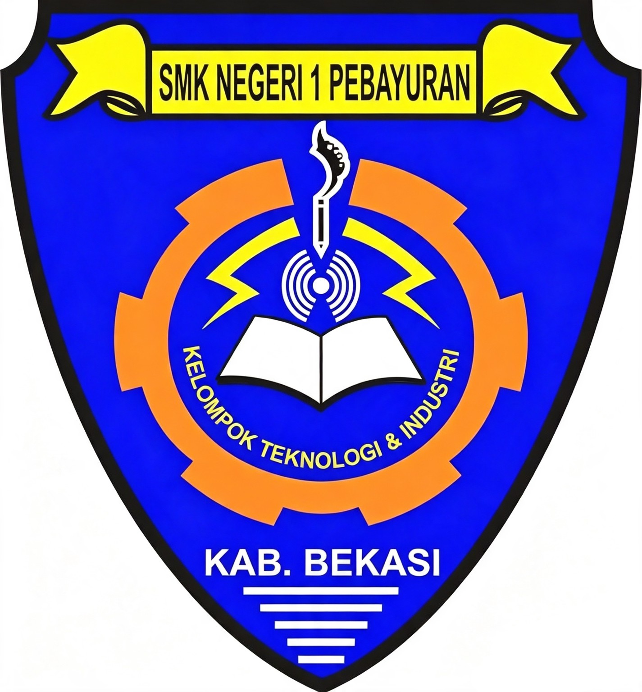

Tentang Saya
Kenali saya lebih dekat


Saya adalah siswi kelas XII Jurusan Teknik Jaringan Komputer dan Telekomunikasi di SMK Negeri 1 Pebayuran yang memiliki ketertarikan pada teknologi, jaringan komputer, dan pengembangan website.
Saya senang mempelajari hal-hal baru dan mengembangkan kemampuan melalui praktik, proyek, serta pengalaman di dunia kerja.